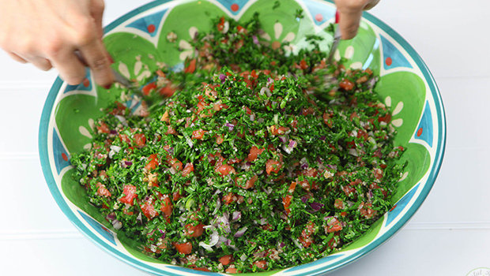

Tabbouleh Recipe

Description
Ingredients
- 3 bunches of parsleys
- 4 tomatoes
- 1 romaine lettuce
- 1 bunch of green onions (you can substitute with a small yellow or red onion)
- 3 handfuls of #1 Bulgur (very fine cracked wheat)
- Salt, olive oil and lemon juice
Steps:
- Wash all vegetables.
- Wash the burgul.
- Put the burgul in a big bowl. Drizzle some olive oil on top and mix.
- Cut the tomatoes into very small fine cubes, add on top of the burgul and mix.
- Chop the parsley into very fine small pieces and add on top.
- Cut the green onions into very fine pieces and add to the mix.
- Add olive oil, salt and lemon juice to taste.
- Optional: Add a tiny bit of cumin.
- Mix very well and taste to check if you need to add lemon or salt.
- Add the romaine lettuce leaves all around the bowl.
- Serve and eat.
- To eat like a pro, you can add 2 spoons of tabboulh in 1 lettuce leaf and eat it like a samdwich ;)
Bon Appetit!